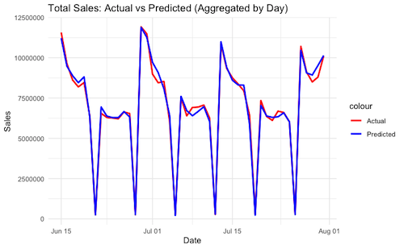
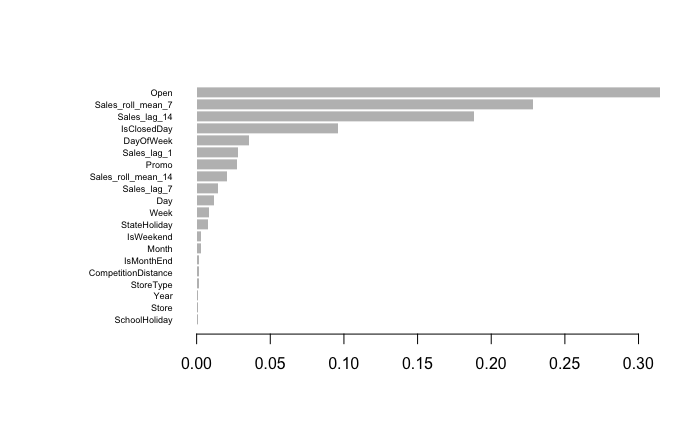
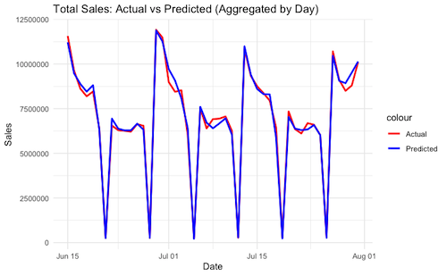
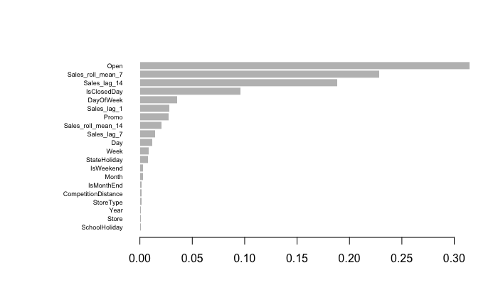

Tyler Katz's Portfolio
Tyler Katz's Portfolio
This project tackles time-series sales forecasting for over 1,100 Rossmann stores using an XGBoost model in R. It features extensive feature engineering, hyperparameter tuning, time-series validation, and an interactive Shiny dashboard for exploring predictions by store and date range.
Sourced from Kaggle
The dataset includes 1,017,209 rows across 18 variables, and sales data for 1,115 Rossmann stores from January 2013 to July 2015
| Metric | Baseline XGBoost | Tuned XGBoost |
|---|---|---|
| RMSE | 1433.87 | 663.47 |
| MAE | 1081.46 | 438.57 |
 



Try out the Shiny app for this project here!
Note: You may have to wake up the app. This may take a minute or two, please be patient!